Tailoring tensile ductility of thin film by grain size graded substrates
1Department of Engineering Mechanics, School of Mechanics, Civil Engineering and Architecture, Northwestern Polytechnical University, Xi’an, China
2Department of Structure and Nano-/Micromechanics of Materials, Max-Planck-Institut für Eisenforschung GmbH, Düsseldorf, Germany
3State Key Laboratory of High Performance Complex Manufacturing, Central South University, Changsha, China
4College of Mechanical and Electrical Engineering, Central South University, Changsha, China
5Institute of Advanced Structure Technology, Beijing Institute of Technology, Beijing, China
6Department of Mechanical and Aerospace Engineering, Rutgers University, New Brunswick, NJ, USA
*Corresponding author: mejjli@csu.edu.cn
International Journal of Solids and Structures 166, 124–134 (2019)
Summary
Thin metal and metallic glass films break at small tensile strains, because a neck or a shear band forms and grows. Bonding a film to a deformable substrate can delay this, but a soft, homogeneous substrate lowers the strength of the pair, and the strong contrast between film and substrate can make the interface debond and crack. Experiments have shown that a substrate with a grain size gradient, nanometer-sized grains at its surface over coarse grains inside, gives a film both strength and ductility, but why it does was not understood.
This paper models a notched thin film on such a graded substrate with finite elements. Each layer of the substrate follows a dislocation density-based model that depends on its grain size, the interface follows a cohesive law, and the film’s ductility is the strain at which it necks. The simulations find three deformation modes, set by the grain size at the surface and the thickness of the graded layer. With the right gradient, the substrate lets the film stretch further than a coarse-grained substrate does, although the graded substrate is itself less ductile, and film and substrate together reach better combinations of strength and ductility than on homogeneous substrates.
1 Finite element model #
The model is a thin film bonded to a thick substrate and stretched along its length in plane strain: a 5 μm film on a 400 μm substrate, 160 μm long. The substrate is interstitial-free (IF) steel. Its grain size gradient surface layer (GSL), of thickness hg between 30 and 380 μm, sits on a coarse-grained (CG) phase with 35 μm grains. The GSL is built from homogeneous layers 0.83 μm thick, so its grain size changes almost continuously, from d1 at the surface (204 nm at most) to 35 μm at its base, growing with depth h as d = 10agh² + bg, the trend measured in such materials. A V-shaped notch, 2 μm wide and 0.1 μm deep, at the center of the film’s surface triggers nonuniform deformation, and by symmetry only the right half is computed.
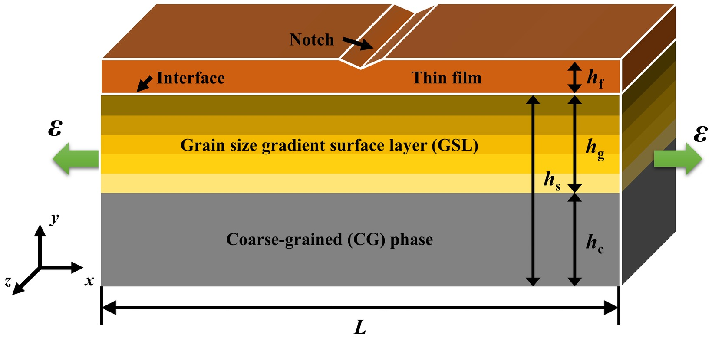
The film stands for a stiff, strong film with little ductility, metal or metallic glass. It is elastic and perfectly plastic, with a Young’s modulus of 160 GPa, a yield strength of 1.1 GPa and a Poisson’s ratio of 0.3. The interface is a cohesive zone, described below. In Abaqus, the film and the substrate are meshed with four-node plane strain elements, 75 of them through the film’s thickness near the notch, and the interface with cohesive elements.
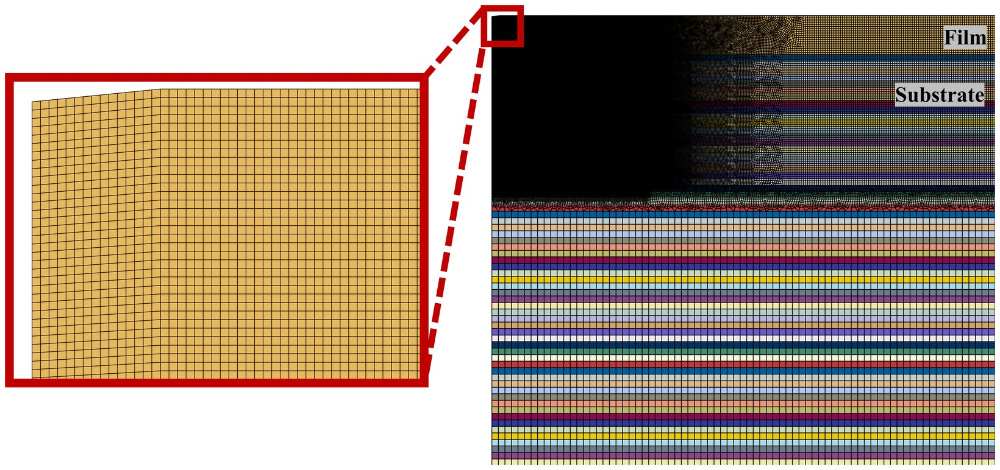
The film’s tensile ductility is its necking strain: the applied strain at which the film’s thinnest point has thinned to a fifth of its original thickness. The criterion was set against experimental uniform elongations. For coarse-grained IF steel it gives 24.9%, against an experimental uniform elongation of 26.6% and 25.9% from the Considère criterion. Unlike the Considère criterion, which assumes uniform deformation, it can capture how a substrate spreads out the strain in the film.
2 Substrate plasticity #
Each layer of the substrate follows J2 flow theory with a dislocation density-based model from earlier work by Li and coworkers on gradient nanostructured metals (Li and Soh, 2012; Li et al., 2017), which this paper extends to a film on a graded substrate; the parameters for IF steel come from Li et al. (2017). A layer’s flow stress adds a lattice friction stress, a Taylor term from its dislocation density ρ and a Hall–Petch term from its grain size d: σ = σ0 + Mαμb√ρ + kHP/√d. Without the Hall–Petch term, the model cannot reproduce how the yield strength measured by Wu et al. (2014) rises as the grains shrink.
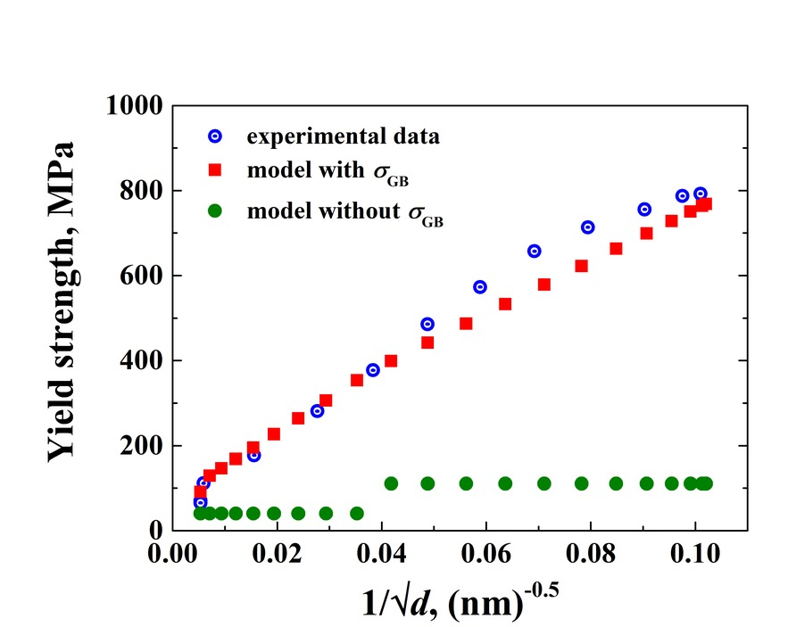
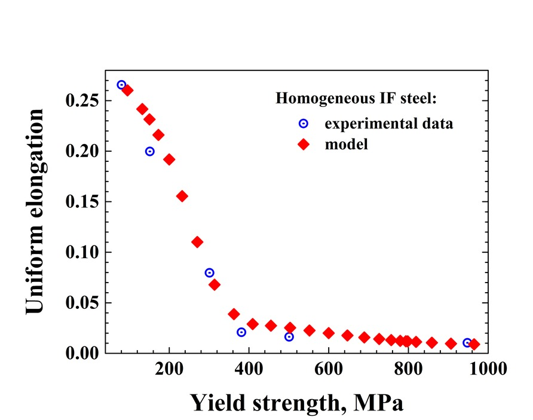


The dislocation density evolves by a Kocks–Mecking law modified for grain size, with a storage term from the grain boundaries, k3/(bd), and a grain size dependent recovery term, (de/d)²ρ. As a result, small grains store few dislocations and harden little. In grains of 2 μm and smaller, the dislocation density levels off, and the uniform elongation of homogeneous IF steel falls from about 0.26 to about 0.01 as its yield strength rises, as in the experiments. Each layer of a graded substrate gets its own stress–strain curve from this model, and these curves are the finite element model’s input.
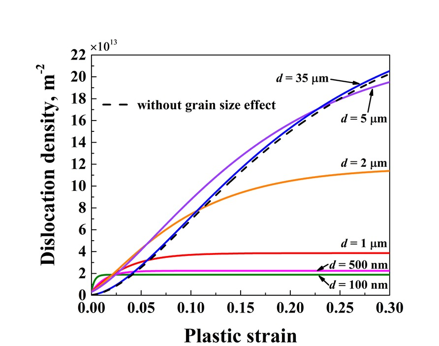
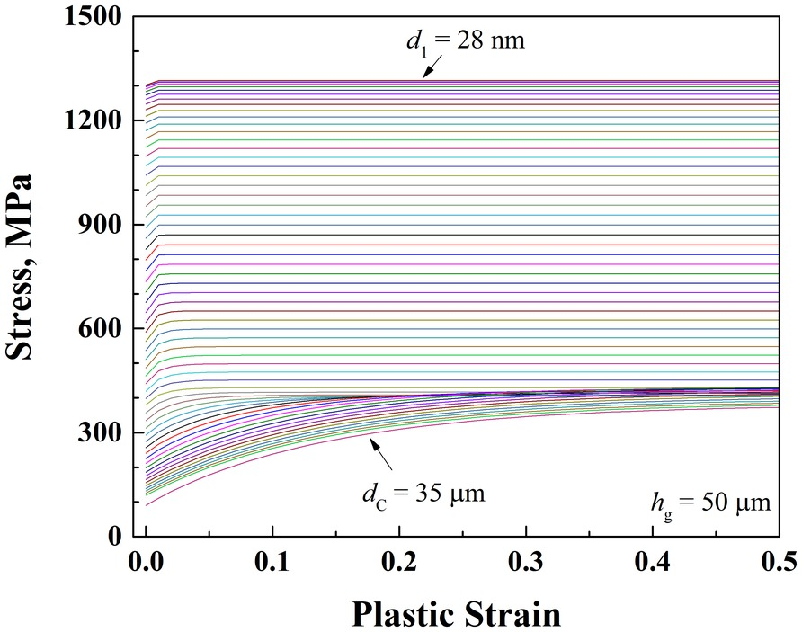

3 Three deformation modes #
With the interface as strong as the film’s yield strength, 1.1 GPa, the film necks in one of three ways, depending on the surface grain size d1 and the gradient layer’s thickness hg. In type A, a neck forms at the notch and deepens quickly, so the film necks early: at a strain of 0.078 for hg = 300 μm and d1 = 112 nm. A film on a coarse-grained substrate necks the same way, but later, at 0.193. In types B and C, the strain spreads along the film instead. In type B the film finally necks beside the notch, at 0.22 for hg = 50 μm and d1 = 26 nm, where the interface under the neck has broken and the film has come away from the substrate. In type C it necks at the notch, as in type A, but much later.
Type Ahg = 300 μm, d1 = 112 nm
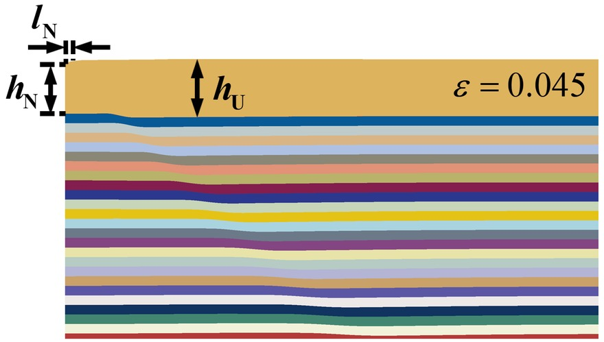
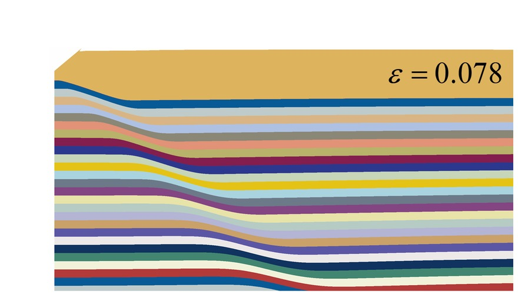
Type Bhg = 50 μm, d1 = 26 nm
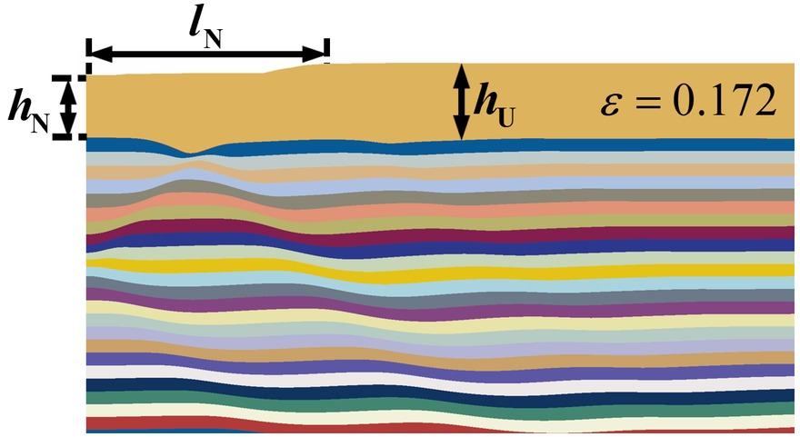
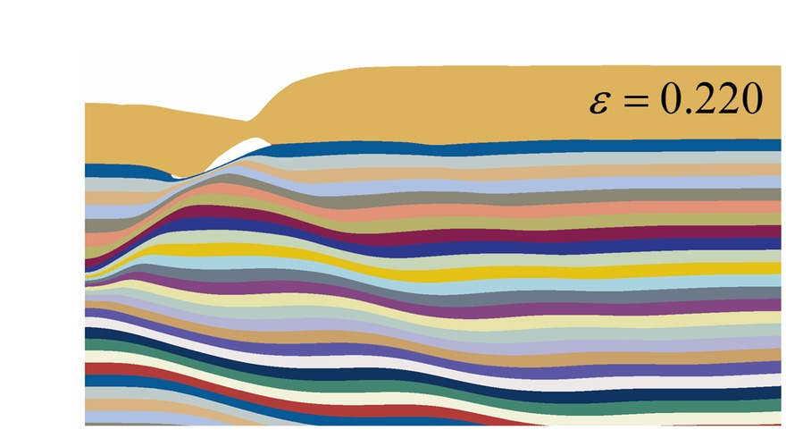
Type Chg = 100 μm, d1 = 14 nm
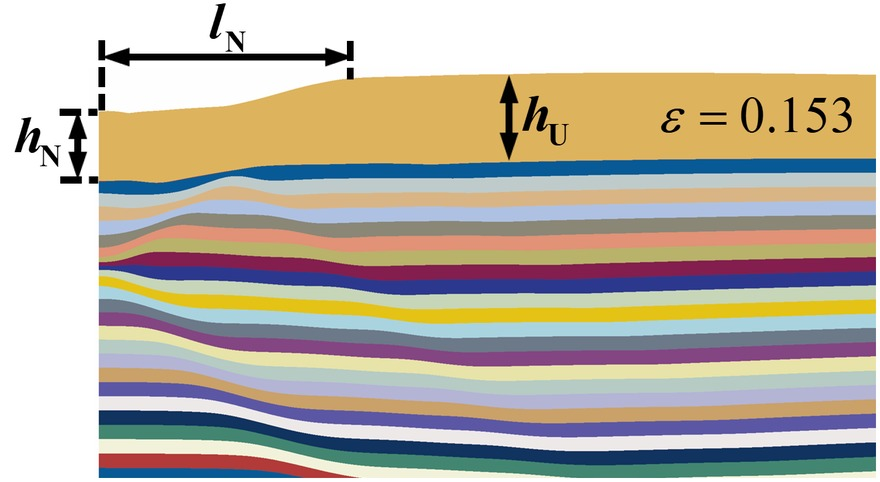
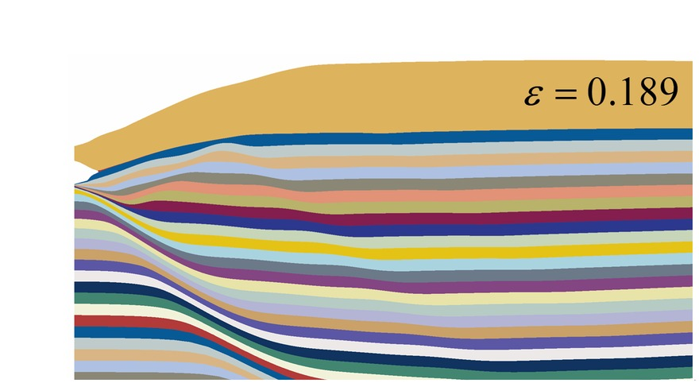
Coarse-grained substrate
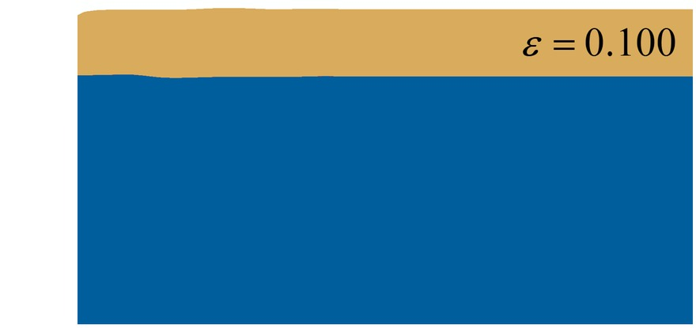
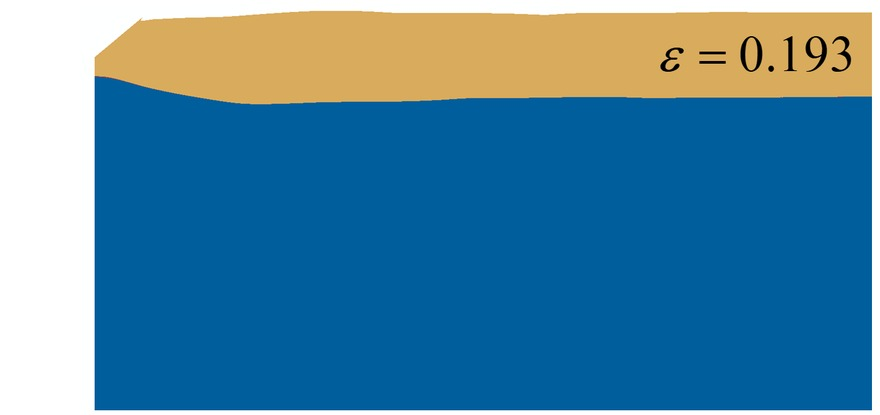

A localization parameter measures how sharp the neck is: ξ = (hU − hN)/lN, the thickness the film has lost in the neck over the neck’s width. In type A it climbs steeply, to 1.08 when the film reaches its necking strain of 0.078. In types B and C it rises slowly and then drops to nearly zero, as the graded substrate spreads the strain along the film and the neck widens instead of deepening. In type B, ξ peaks at 0.32 at a strain of 0.09, then drops to about 0.05, more than an order of magnitude below type A’s, and stays there until the interface breaks.
Mapping the modes over hg and d1 shows that types B and C occur when d1 is 28 nm or less, where the surface layer’s yield strength is close to or above the film’s: type B on gradient layers thinner than about 80 μm, type C on thicker ones. Coarser surface grains give type A. The gradient gives the substrate a surface as strong as the film, which a coarse-grained substrate cannot, while a homogeneous nanograined substrate strong enough would lose the ductility it needs to hold back the neck. The substrates on which the film stretches further than on a coarse-grained one all lie where the modes meet.
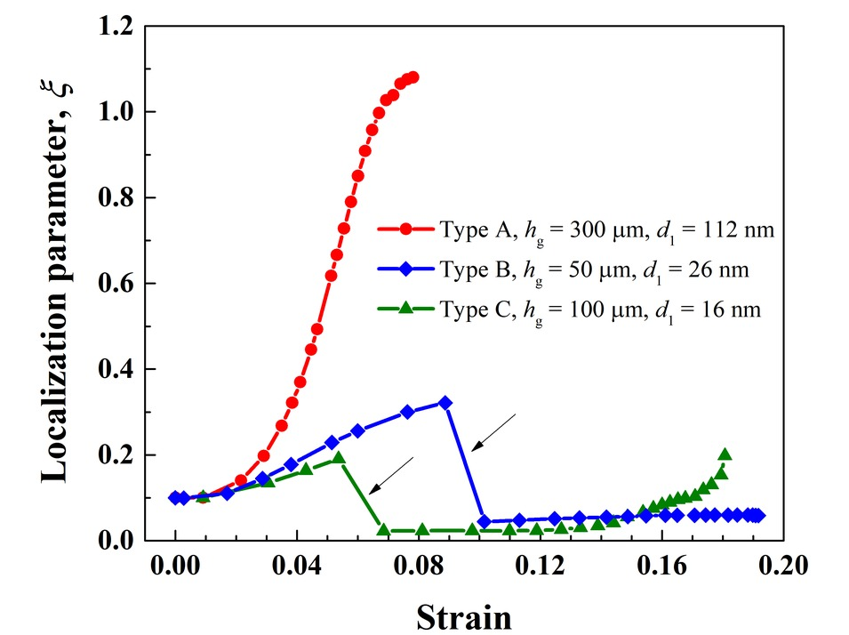
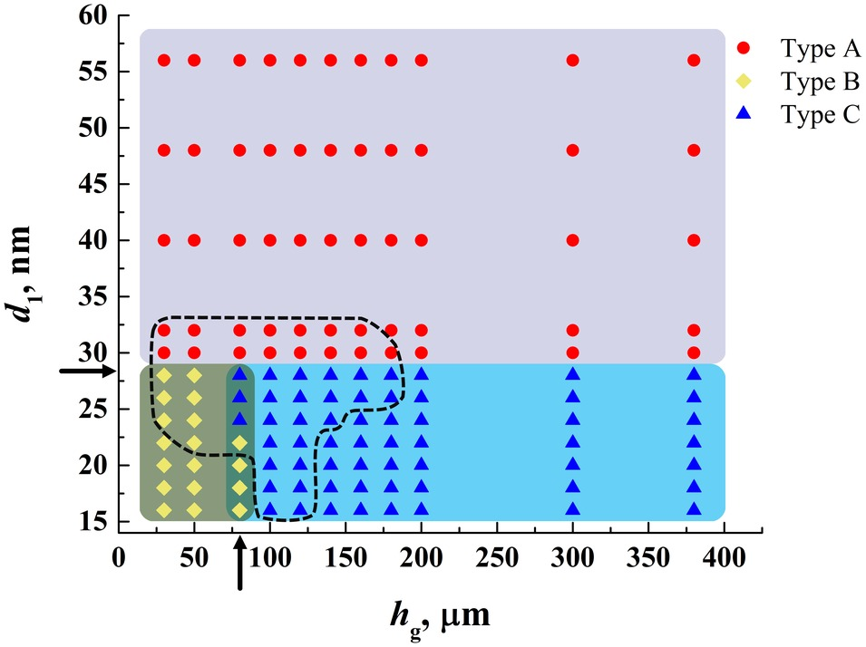


4 Tensile ductility #
With the interface at 1.1 GPa, the necking strain rises with the surface grain size d1 to a peak near 28 nm, the boundary between type A and the other two modes, and then falls. On gradient layers thinner than 200 μm, the peak is higher than the 0.193 of a film on a coarse-grained substrate. With hg = 100 μm, the film necks at up to 0.23, and it stretches further than on the coarse-grained substrate for every d1 from 16 to 32 nm.
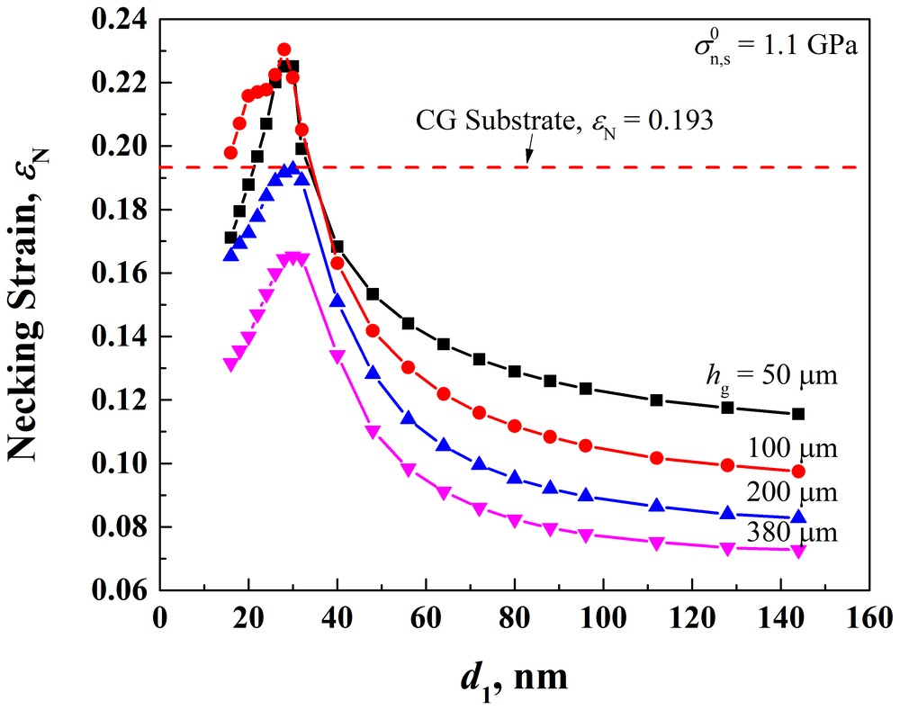
The gradient layer’s thickness matters too. With coarser surface grains, in type A, the necking strain falls as the gradient layer thickens, because the substrate itself becomes less ductile. With d1 = 20 or 28 nm it first rises and then falls, as the mode changes from type B to type C; with d1 = 28 nm it reaches 0.256 at hg = 80 μm.
The same results can be read against the strength of the substrate’s surface relative to the film’s. With hg = 100 μm and the surface grain size chosen to give ratios of the film’s yield strength to the surface layer’s from 0.65 to 1.35, the necking strain peaks near a ratio of 0.85 for three film strengths. There the mode changes from type C to type A, as the map shows.
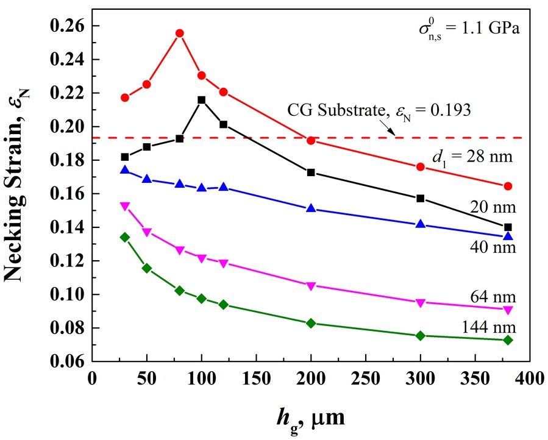
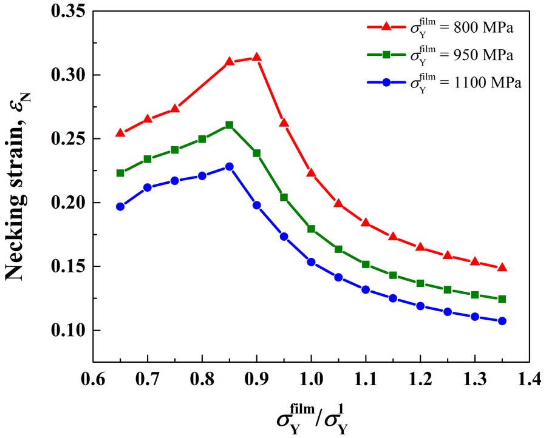


5 Film–substrate interface #
The interface follows a bilinear traction–separation law. It starts to soften when the traction reaches the interfacial strength σ0, at a separation δ0, and breaks at δmax; normal and shear loads combine through a quadratic criterion. Both directions share one strength, and δ0 and δmax are 50 and 100 nm, 1% and 2% of the film’s thickness. In the sections above, the interface is as strong as the film’s yield strength. No interfacial strength has been measured for this system, but metallic glass films deposited on metal substrates have shown no delamination even after the film fractured (Lu et al., 2013, 2016), which suggests a strong interface. Here the strength ranges from 0.2 to 10 times the film’s yield strength, 220 MPa to 11 GPa.
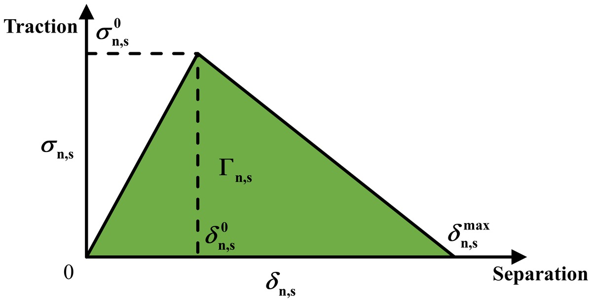
On the coarse-grained substrate, and on graded substrates with coarse surface grains or a thick gradient layer, such as hg = 100 μm with d1 = 144 nm, the necking strain rises with the interfacial strength up to about the film’s yield strength and then levels off. With fine surface grains and a thin gradient layer it jumps instead: for hg = 50 μm and d1 = 24 nm, from 0.22 to 0.32 once the interface is 2.5 times as strong as the film, 1.6 times the necking strain of a film on a coarse-grained substrate. At such strengths the interface no longer debonds, so the film deforms with the substrate and stretches further.
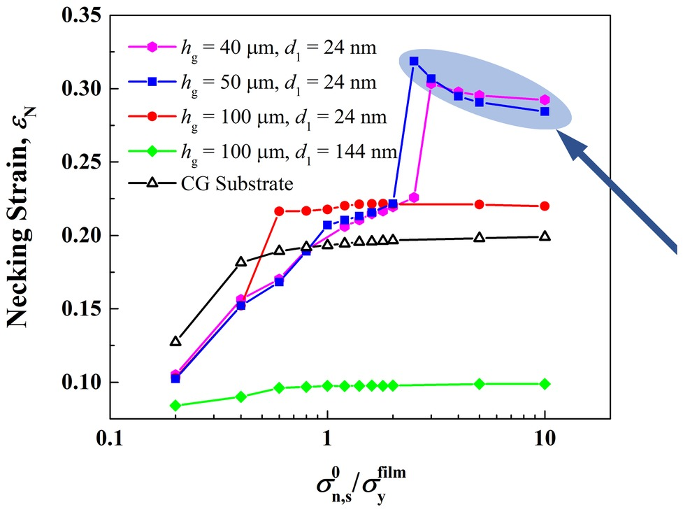
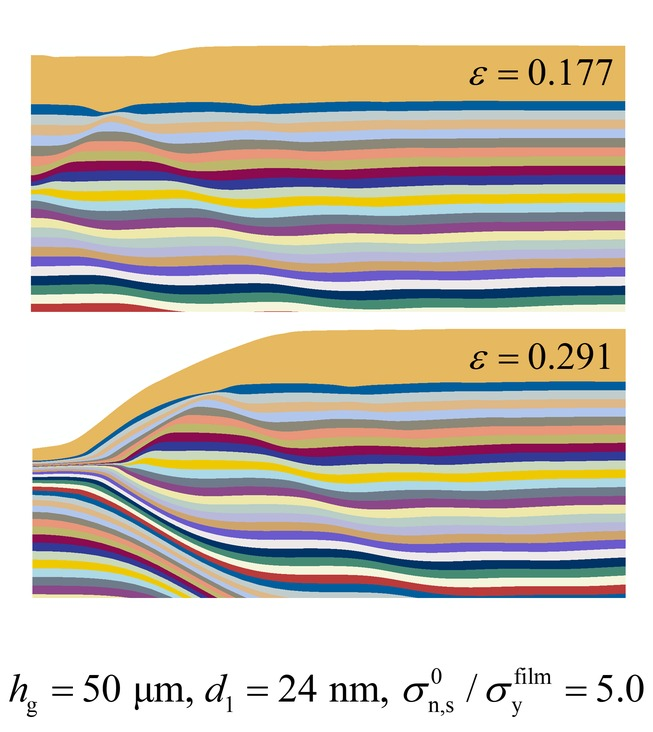

The ratio δmax/δ0 has little effect: from 2 to 11, the necking strain barely changes for three substrates.
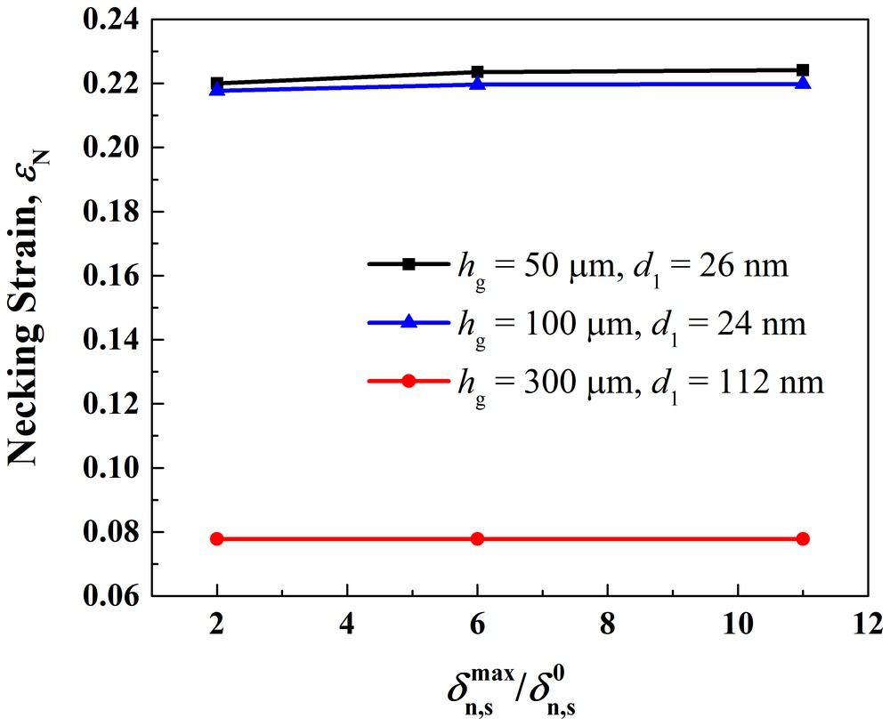
6 Strength and ductility #
The paper also computes the yield strength of film and substrate together and plots it against the necking strain, for gradient layers 30 to 380 μm thick with surface grains from 16 to 144 nm and the interface as strong as the film. Films on homogeneous substrates, with grain sizes from 100 nm to 34 μm, trade strength for ductility. Each gradient layer thickness instead has a peak, its best combination of strength and ductility, and every peak lies outside the region the homogeneous substrates reach, further out for thicker gradient layers. With hg = 380 μm, the film necks at 0.165 with a yield strength of 600 MPa, where a homogeneous substrate of the same strength gives 0.072.
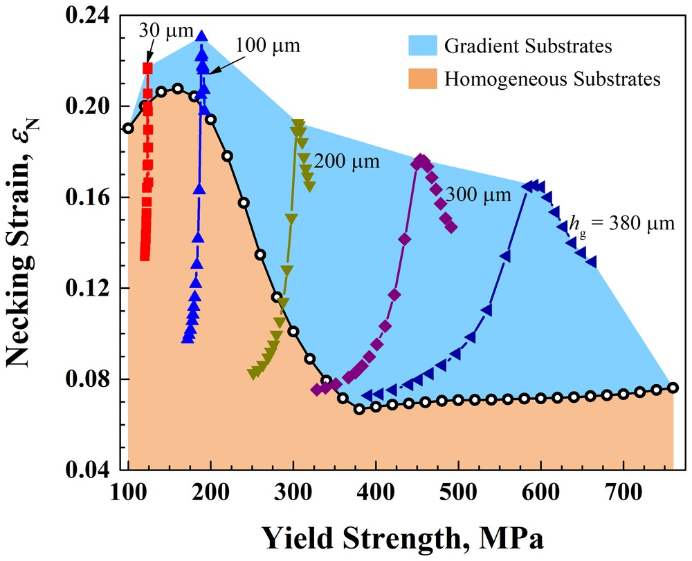
Finally, the paper compares whole stress–strain curves with experiments. This run differs from those above: the film is 40 μm thick, on a gradient substrate with hg = 180 μm and d1 = 40 nm, and its end is marked where the film has thinned to 60% of its thickness rather than to a fifth. Alone, the film reaches a strain of only 0.04, typical of thin metal and metallic glass films, and softens after yielding as it necks. On the gradient substrate it reaches 0.16, a gain of 0.12. In experiments, a gradient Ni substrate raised the uniform elongation of a Ni-P metallic glass film by 0.11 (Lu et al., 2013), a gain of the same size.
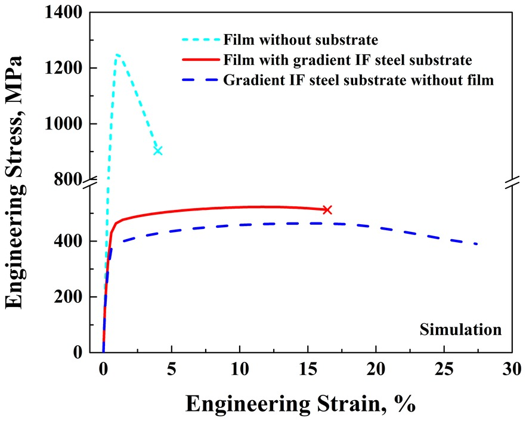
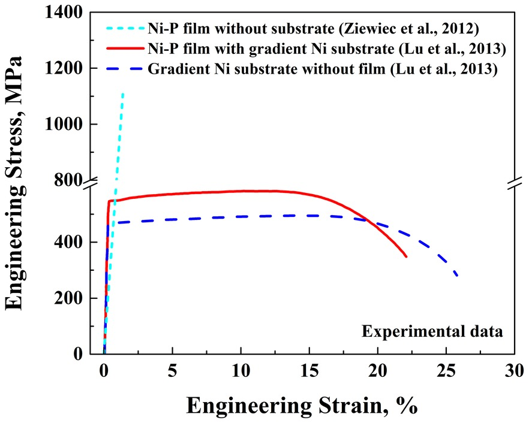

BibTeX #
@article{chen2019tailoring,
title = {Tailoring tensile ductility of thin film by grain size graded substrates},
author = {Chen, Tianyu and Lu, Wenjun and Li, Jianjun and Chen, Shaohua and Li, Chun and Weng, George J.},
journal = {International Journal of Solids and Structures},
volume = {166},
pages = {124--134},
year = {2019},
doi = {10.1016/j.ijsolstr.2019.02.011}
}